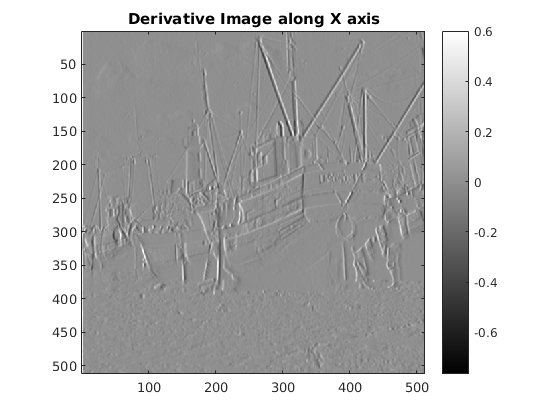
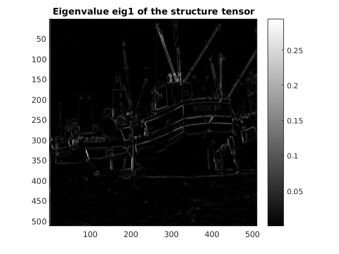

Contents
MyMainScript
sample for my own colormap
myNumOfColors = 256; colorScale = 0:1/(myNumOfColors-1):1; myColorScale = [ colorScale' colorScale' colorScale' ]; % This contains the code that imports the image, % generates the plots, and computes the corners tic;
Code for implementing myHarrisCornerDetector
load('../data/boat.mat'); % assume only grayscale images % The optimal values used are k=0.2, sigma_smooth=0.8 and % sigma_region=0.8 [m n] = size(imageOrig); [img, Ix, Iy, eig1, eig2, C] = myHarrisCornerDetector(imageOrig, 0.8, 0.8, 0.2);
Show the images
Oiginal Image
figure(); imagesc(imageOrig); daspect([1 1 1]); axis tight; colormap(myColorScale); colorbar; title('Original Image'); % Smooth Image figure(); imagesc(img); daspect([1 1 1]); axis tight; colormap(myColorScale); colorbar; title('Smooth Image'); % Derivative Image along X axis figure(); imagesc(Ix); daspect([1 1 1]); axis tight; colormap(myColorScale); colorbar; title('Derivative Image along X axis'); % Derivative Image along Y axis figure(); imagesc(Iy); daspect([1 1 1]); axis tight; colormap(myColorScale); colorbar; title('Derivative Image along Y axis'); % eig1 image figure(); imagesc(eig1); daspect([1 1 1]); axis tight; colormap(myColorScale); colorbar; title('Eigenvalue eig1 of the structure tensor'); % eig2 image figure(); imagesc(eig2); daspect([1 1 1]); axis tight; colormap(myColorScale); colorbar; title('Eigenvalue eig2 of the structure tensor'); 

color_img is used to display red dots for corners
color_img = zeros(m, n, 3); for i=1:3, color_img(:,:,i) = img; end C = (C>2e-5); C = imfilter(C, ones(5)); tmp = color_img(:,:,1); tmp(C) = 1; color_img(:,:,1) = tmp; tmp = color_img(:,:,2); tmp(C) = 0; color_img(:,:,2) = tmp; tmp = color_img(:,:,3); tmp(C) = 0; color_img(:,:,3) = tmp; % Corners highlighted figure(); imagesc(color_img); daspect([1 1 1]); axis tight; colormap(myColorScale); colorbar; title('Corners highlighted'); toc;